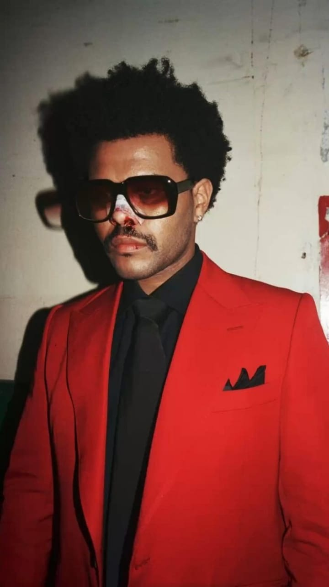

Contact Us
Latest Articles
Top 10 Albums of 2024

Discover the most talked-about albums of the year! From indie hits to mainstream sensations, we’ve got the scoop on what’s shaping the music scene.
Exploring Different Music Genres

Join us as we dive into various music genres, from jazz to hip-hop, and explore their unique characteristics and histories.
Interviews with Emerging Artists
Get inspired by interviews with up-and-coming artists who are redefining the music landscape with their innovative sounds.
Artist Spotlight: Taylor Swift

Taylor Swift continues to dominate the charts with her latest song "Cruel Summer." Her storytelling and emotional depth resonate with fans worldwide.
Most Famous Song: "Blank Space"
About: An American singer-songwriter, Taylor Swift is known for her narrative songwriting, which often draws from her personal life. She has received numerous awards, including 12 Grammy Awards, and is known for her crossover from country to pop music.
Artist Spotlight: Ed Sheeran
Ed Sheeran’s new track "Eyes Closed" showcases his signature blend of pop and folk, solidifying his status as a top artist in the industry.
Most Famous Song: "Shape of You"
About: An English singer-songwriter and record producer, Ed Sheeran is known for his rich melodies and emotional lyrics. He has achieved global success and has collaborated with many famous artists, earning multiple Grammy Awards.
Artist Spotlight: Billie Eilish

Billie Eilish's latest single "What Was I Made For?" captures her unique sound and introspective lyrics, leaving fans wanting more.
Most Famous Song: "Bad Guy"
About: An American singer and songwriter, Billie Eilish gained recognition for her unconventional style and themes in music. Her debut album, "When We All Fall Asleep, Where Do We Go?" topped charts worldwide and earned her numerous awards, including 7 Grammy Awards in one night.
Artist Spotlight: The Weeknd
The Weeknd's recent hit "Save Your Tears" has taken the music world by storm, blending retro sounds with modern pop.
Most Famous Song: "Blinding Lights"
About: Canadian singer, songwriter, and record producer, The Weeknd is known for his unique musical style, which incorporates elements of R&B, pop, and hip-hop. He has received numerous accolades, including three Grammy Awards and multiple American Music Awards.
Artist Spotlight: Dua Lipa

Dua Lipa's empowering anthem "Dance The Night" encourages fans to embrace joy and live in the moment.
Most Famous Song: "Don't Start Now"
About: An English-Albanian singer and songwriter, Dua Lipa has quickly risen to fame with her distinct voice and pop hits. She has received numerous awards, including two Grammy Awards, and is known for her disco-inspired sound and empowering lyrics.
Artist Spotlight: Harry Styles
Harry Styles returns with "As It Was," a nostalgic track that perfectly blends pop with introspective lyrics.
Most Famous Song: "Watermelon Sugar"
About: An English singer, songwriter, and actor, Harry Styles gained fame as a member of the boy band One Direction before launching a successful solo career. He is known for his eclectic style and influence on contemporary pop music.
Artist Spotlight: Hozier
Hozier's "Almost (Sweet Music)" is a beautiful reflection on love and nostalgia, showcasing his soulful voice.
Most Famous Song: "Take Me to Church"
About: An Irish musician and songwriter, Hozier is known for his blues and folk-infused sound. His debut single "Take Me to Church" received widespread acclaim and has been recognized for its powerful lyrics addressing social issues.
Artist Spotlight: Shawn Mendes
Shawn Mendes captivates audiences with "When You're Gone," a heartfelt ballad about love and loss.
Most Famous Song: "Stitches"
About: A Canadian singer-songwriter, Shawn Mendes gained fame through social media and has become known for his pop anthems and heartfelt ballads. He has received several awards and nominations, including American Music Awards and MTV Europe Music Awards.
Artist Spotlight: Sam Smith
Sam Smith's emotional "Love Me More" showcases their incredible vocal range and vulnerability.
Most Famous Song: "Stay With Me"
About: An English singer and songwriter, Sam Smith is known for their soulful voice and emotive lyrics. They have won multiple Grammy Awards and have been recognized for their contributions to the music industry, particularly in the pop and soul genres.
Artist Spotlight: Drake
Drake’s "Jimmy Cooks" is a powerful collaboration that highlights his evolution as an artist.
Most Famous Song: "God's Plan"
About: A Canadian rapper, singer, and songwriter, Drake is one of the most successful artists of his generation. Known for his versatility, he blends R&B, hip-hop, and pop, and has received numerous awards, including four Grammy Awards.
Artist Spotlight: J. Cole
J. Cole's latest release "Middle Child" explores themes of identity and legacy, solidifying his place in hip-hop.
Most Famous Song: "Middle Child"
About: An American rapper, singer, and record producer, J. Cole is known for his lyrical depth and storytelling abilities. He has received numerous accolades and is respected for his influence on hip-hop culture and his philanthropic efforts.
Artist Spotlight: Seedha Maut
Seedha Maut's powerful track "Gully Gang" showcases their raw lyrical prowess and connects with fans on social issues.
Most Famous Song: "Gully Gang"
About: An Indian hip-hop duo from Delhi, Seedha Maut is known for their impactful lyrics and hard-hitting beats. They have played a significant role in popularizing the underground rap scene in India.
Artist Spotlight: Zayan Malik
Zayan Malik's "Khuda Ki Kasam" has captured hearts with its emotional depth and melodic charm.
Most Famous Song: "Khuda Ki Kasam"
About: An emerging Indian singer and songwriter, Zayan Malik has quickly gained popularity with his unique voice and relatable lyrics. His music often blends contemporary pop with traditional sounds.
Artist Spotlight: Hanuman Kind

Hanuman Kind's "Gully" resonates with fans through its energetic beats and powerful lyrics.
Most Famous Song: "Gully"
About: An Indian hip-hop artist, Hanuman Kind is known for his unique style and engaging performances. He has become a notable figure in the Indian rap scene, addressing themes of resilience and identity in his music.
Artist Spotlight: XXXTentacion
XXXTentacion's "SAD!" reflects his struggles and emotions, resonating deeply with fans.
Most Famous Song: "SAD!"
About: An American rapper, singer, and songwriter, XXXTentacion gained fame for his eclectic style and emotionally charged music. His life was cut short in 2018, but his legacy continues to influence artists today.
Artist Spotlight: Krishna

Krishna's "Karma" combines powerful lyrics with a catchy hook, showcasing his talent in the Indian hip-hop scene.
Most Famous Song: "Karma"
About: An Indian rapper and songwriter, Krishna has made waves in the underground hip-hop scene. Known for his intricate wordplay and impactful storytelling, he continues to push boundaries in his music.
Artist Spotlight: Kendrick Lamar
Kendrick Lamar's "HUMBLE." is a bold statement that showcases his lyrical genius and relevance in contemporary hip-hop.
Most Famous Song: "HUMBLE."
About: An American rapper and songwriter, Kendrick Lamar is known for his thought-provoking lyrics and innovative sound. He has received numerous awards, including 14 Grammy Awards, and is often regarded as one of the greatest rappers of his generation.